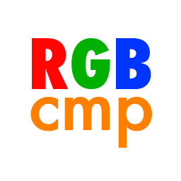

About
RGBCompare is a nifty little application for X86 Linux, Macintosh OS X, and Windows. It allows you to compare how colors look on your PC and the Nintendo DS (or any other 555-color based system). It was designed as an aid to help graphics programmers correctly match colors or chose colors that were consistent in both 555-color (RGB15) and 24-bit color (RGB24).
Please contact me if you have any feature requests or bug reports. Enjoy!